Low left stance
Breathe naturally
Extend the left leg and sink deeply over the right leg into a low left stance. Turn and incline left; reach the right palm diagonally back, palm up, while the left elbow settles inside the left thigh.
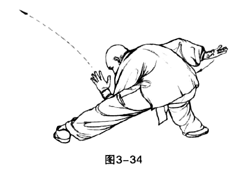
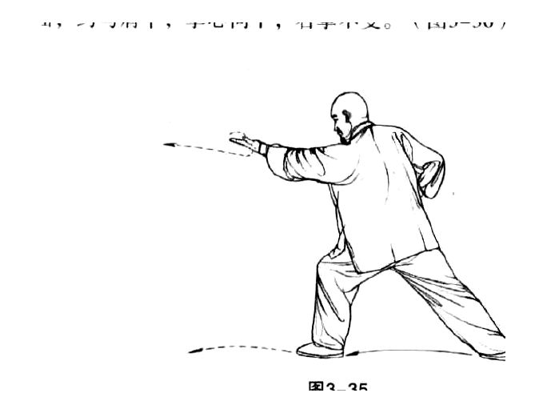
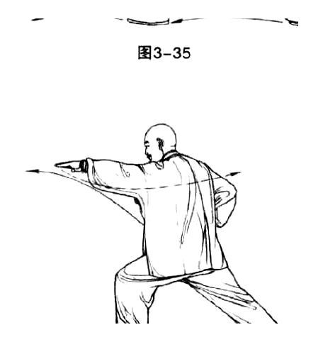
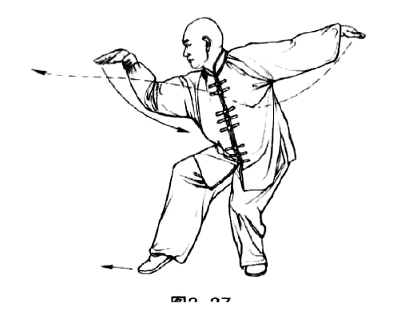
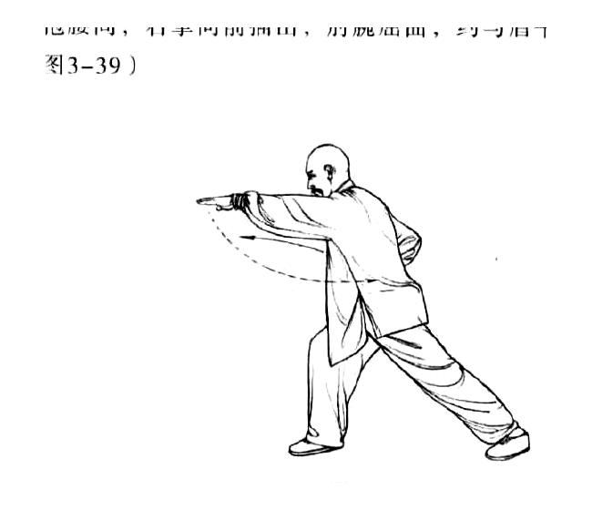
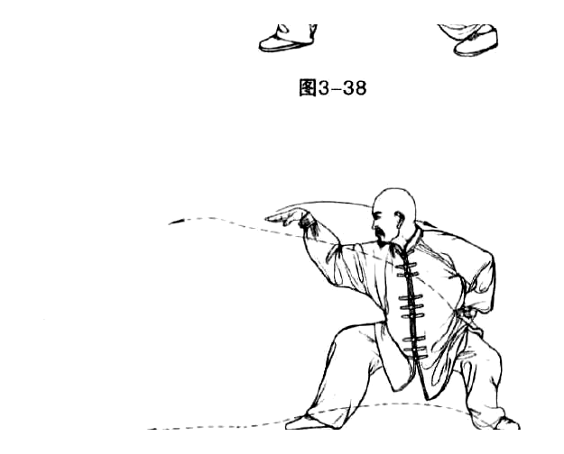
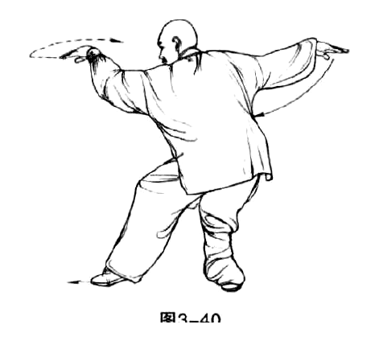
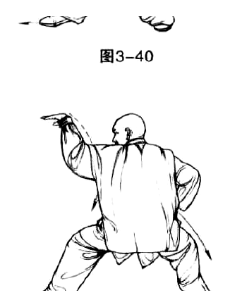
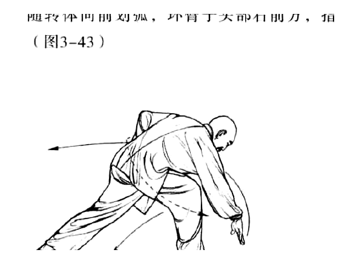
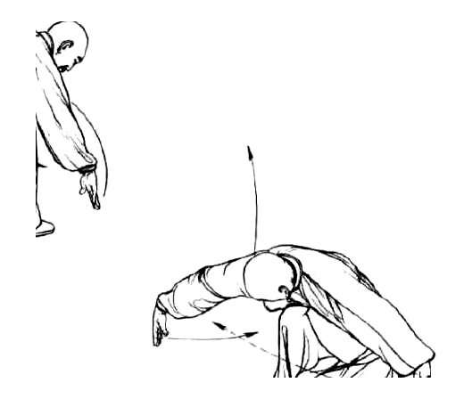
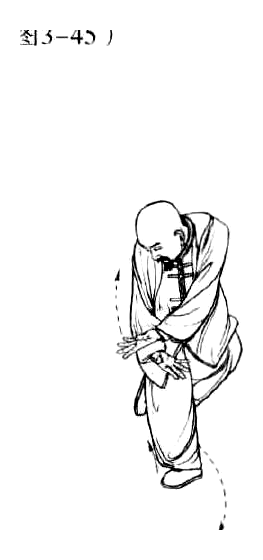
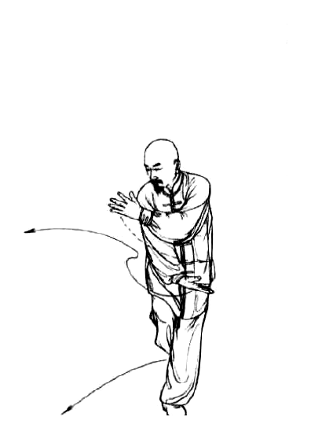
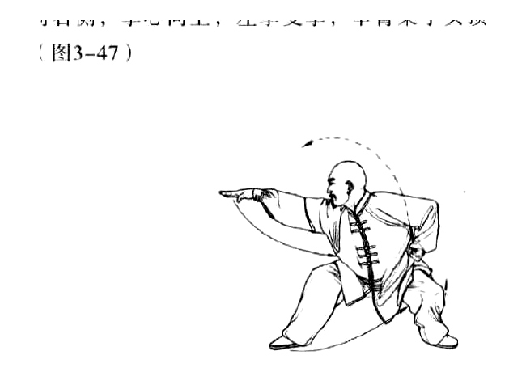
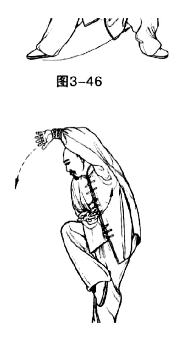
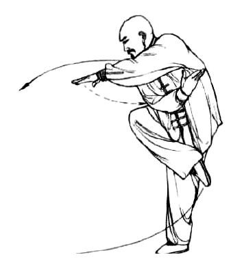
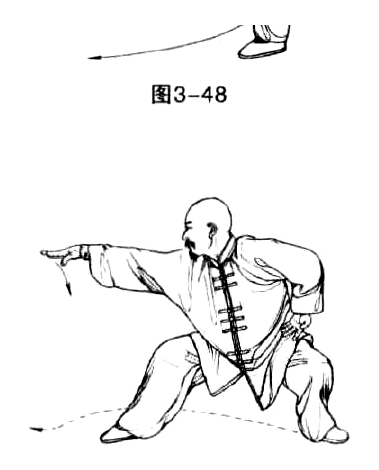
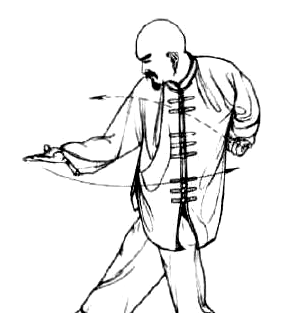
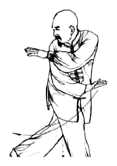
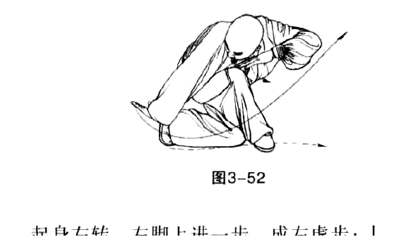
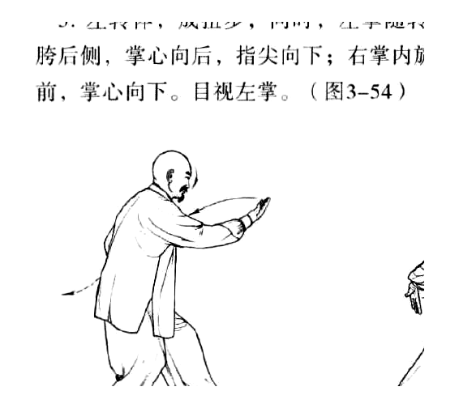
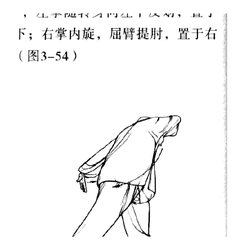
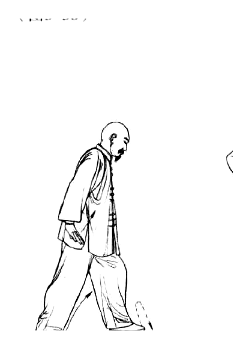
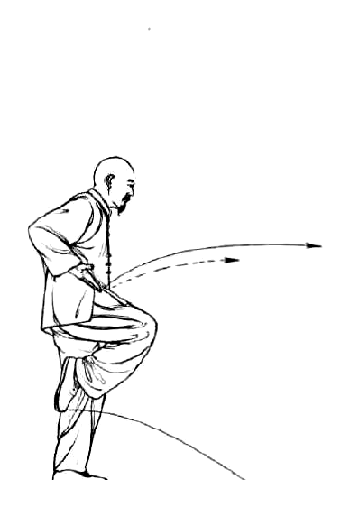
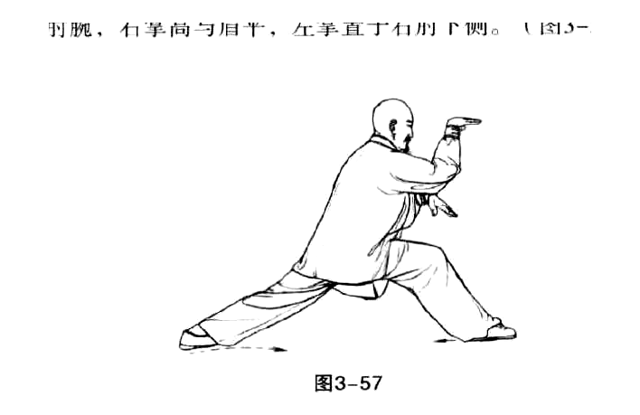
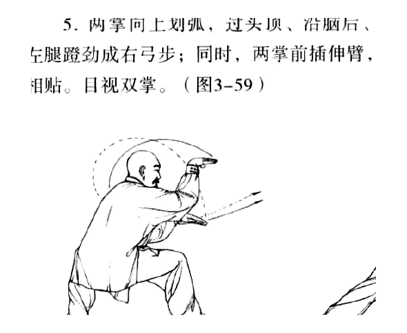
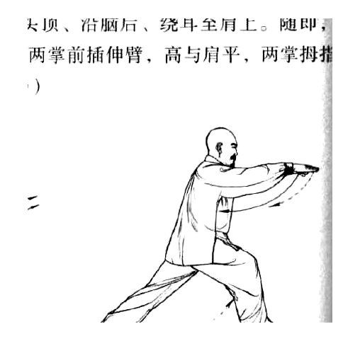
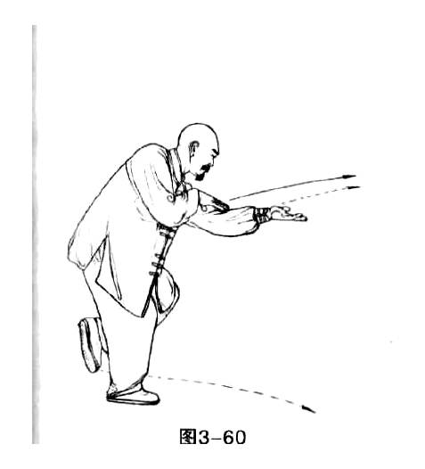
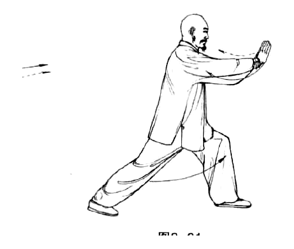
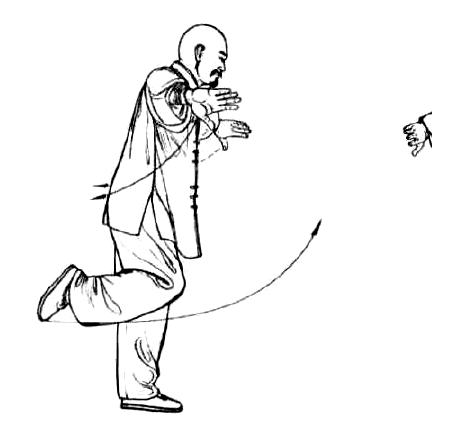
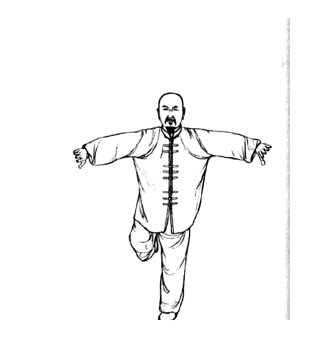
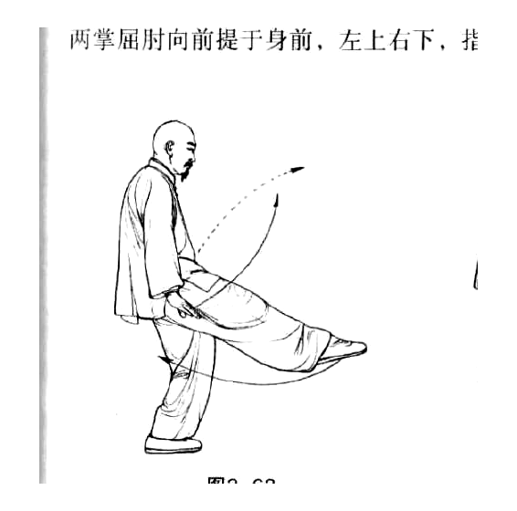
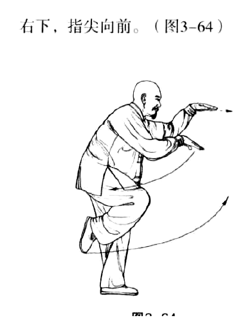
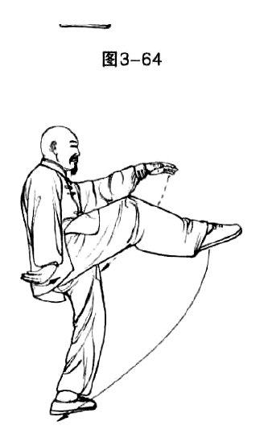
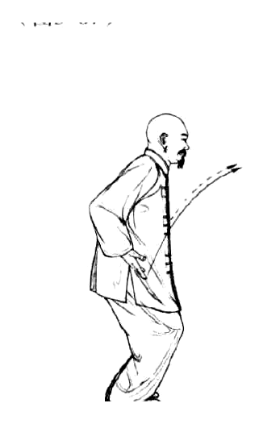
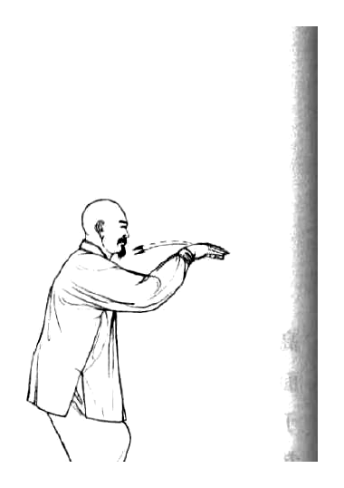
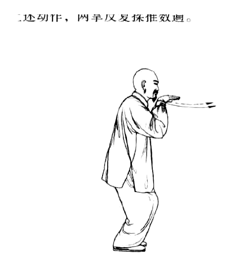
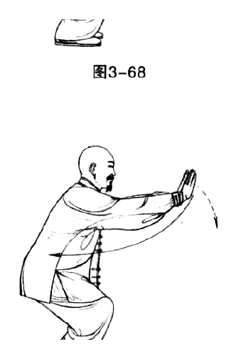
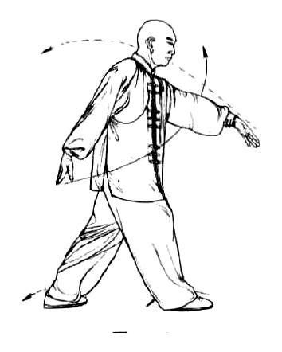
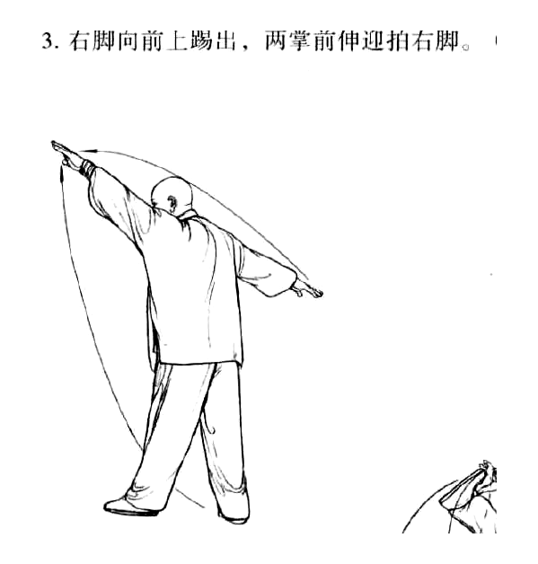
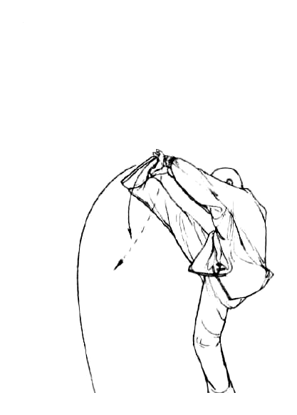
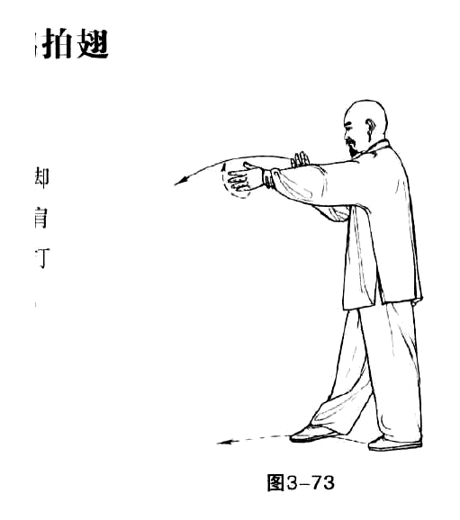
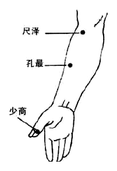
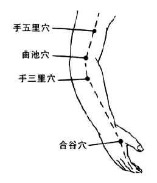
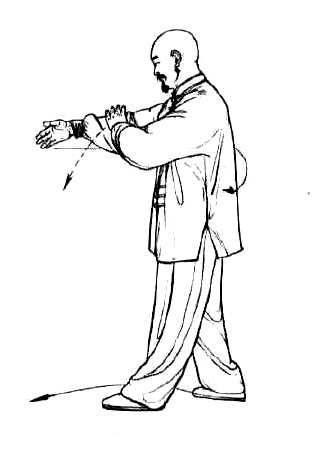
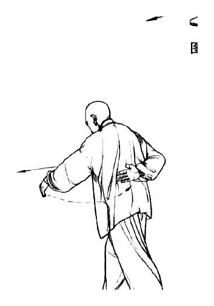
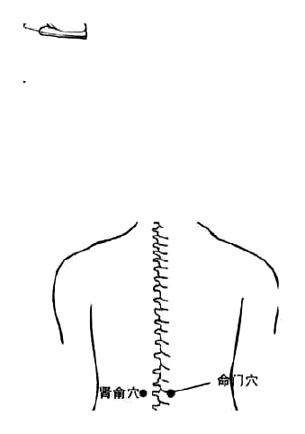
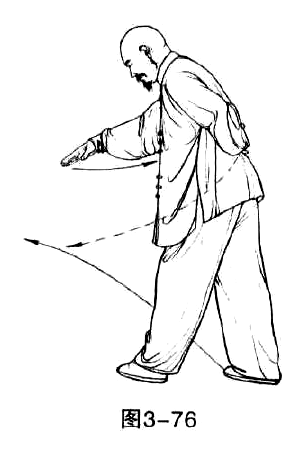
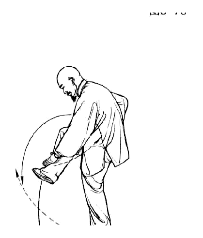
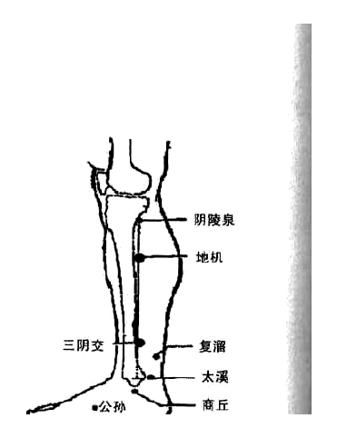
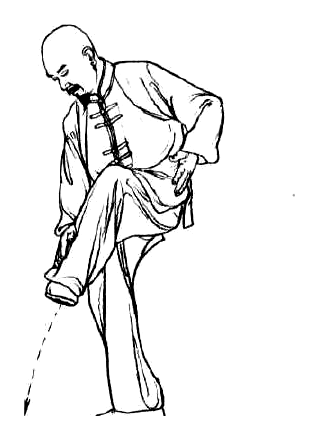